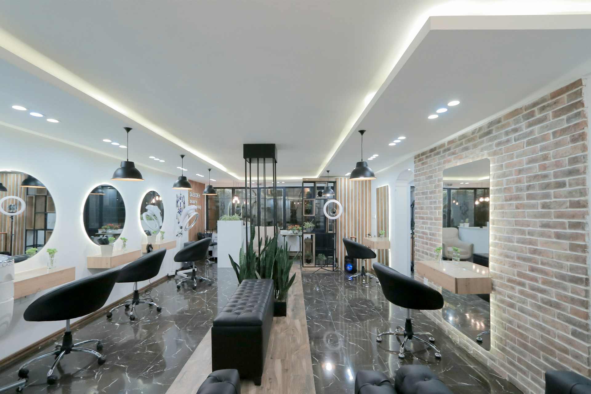
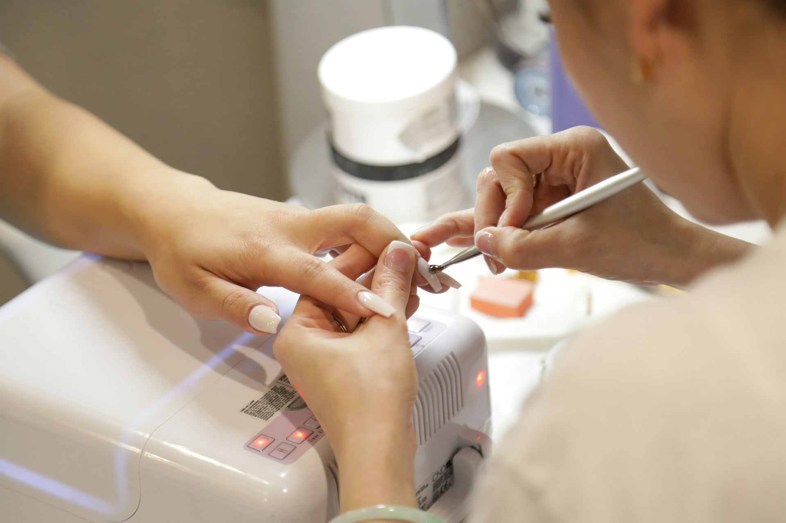

Example
DS · Product components · v0.6
Every domain-free component the client site and the business workspace use beyond today’s 38 @yeral/ui components, plus the new variants of existing ones — one canonical drawing each, with its states and where it goes in Storybook.
Caption · Name · package · Storybook: new — Group/Title | existing title → extend · from: screens
Unify · where screens drifted, the drawing is the winner; the caption names it
Out of scope · domain components (calendar grid, request card, floor plan…) live on DS-Business
v0.6 · round 1
English first — every label, sample and caption in British English, sample data written the English way · Example badge (01) · SignInCodeStep with the first-launch code (05) · LanguageSwitcher (06) · Long-text check (09) · average-bill tiles removed
v0.5 · round 6
StatusBadge: status icon, dot retired (01) · StatusLegend (01) · Login: PhoneInput, CodeInput, AuthCard (05) · WorkspaceSwitcher, AccountMenu, SideNav, BottomTabBar + MoreSheet, FAB (06) · selection = ink ring on canvas objects, SwatchPicker (08) · billing, plan and app-banner examples removed
part B · client
StatusBadge sub-lines: who cancelled, move asked (01) · Callout page banner + info card (02) · Price: “from 250 TMT”, “Price at the place” (03) · PhoneInput mobile-only error + masked number, party-size chips + filter chip (05) · move mode: stepper, locked row, ChangeSummary (06) · Toast undo failed (07) · offered TimeSlots + confirm, EmptyState page (08)
01 · Status & labels
Status badges, legend, pills, timers, deltas, counts
StatusBadge · one icon per status (the dot is retired)
pending · clockconfirmed · checkcompleted · check-checkcancelled · xnoshow · user-x
default 26 · drawers, cards
Pending
Confirmed
Completed
Cancelled
No-show
compact 24 · tables, legend
Pending
Confirmed
Completed
Cancelled
No-show
inline · history rows
Pending
Confirmed
Completed
Cancelled
No-show
meaning · legend copy
New request — waiting for an answer
Time set, the client was told
The visit happened (set by itself after the end time)
The client, the business or the system cancelled
The client didn’t come — marked with Report
Sub-line · client copy · default 26 + 13/18, icon 14
CancelledYou cancelled
CancelledThe business declinedReason: this time isn’t free
CancelledNo answer in time
ConfirmedNew time requested: Sat, 17 Oct · 11:30 · waiting for an answer
Sub-line · team copy · compact 24 + 12/16, icon 13
CancelledThe client cancelled
CancelledThe business cancelled
CancelledNo answer in time
Interactive · toolbar filter shortcut 36
No new requests
default · hover (line → #dc8b0b) · focus · nothing to answer (neutral, not a button)Icon set · Lucide 24, stroke 2, colour = status ink
clock
check
check-check
x
user-x
The same icon goes on the badge, the calendar block (12–14 px, DS-Business), list rows, the legend and the drawer.26 / 24 · pad 0 10 0 8 · gap 6 · icon 14 stroke 2 in status ink · 13/18 600 · 1 px tone line · radius 999 · inline: icon 12 + 13/18 n-600 · sub-line: default 13/18 n-600 + icon 14 (stroke 1.75) · compact 12/16 n-600 + icon 13 · pending tone = icon in #93500a · interactive 36 · pad 0 14 · 14/20 600
StatusBadge → extend · @yeral/ui (status-badge) · Storybook: Status/StatusBadge → extend: a status icon replaces the 6 px dot (clock · check · check-check · x · user-x, 14 px, stroke 2, status ink — D4), size="compact" 24 (tables, legend), variant="inline" (12 px icon + 13/18 n-600 label, history rows — replaces variant="dot"), asChild interactive at 36 (toolbar shortcut, hover line #dc8b0b), sub-line state under the badge (`subline={icon, text, tone}`): who cancelled — user “You cancelled” / building “The business declined” (request never confirmed) or “The business cancelled” (after it was confirmed) / hourglass “No answer in time” — plus reason caption, and the pending tone “New time requested: … · waiting for an answer” (clock in amber ink) under a Confirmed badge; the team copy (The client cancelled · The business cancelled · No answer in time) rides on the compact size; update stories All, CancelledBy, PhoneBooking; add Compact, Inline, Interactive, SubLine (Client, Team, MovePending) · from: B-Bookings, B-Calendar, B-Client, B-Classes, B-Tables, B-Mobile, B-Settings, Account-Bookings (.bby), Booking-Link, Mobile frames 7–12, Booking. Wins: pad 0 10 0 8 + gap 6 (every round-6 screen) — B-Reviews still draws 0 10 with dots, but those are review states and move to Pill; business-cancel icon = building (B-Bookings, B-Tables) over the store icon of v0.4; interactive = B-Calendar .rqc; sub-line text n-600 in both sizes (Account-Bookings .cap.bby) — the slate #41505f of B-Bookings/B-Calendar .by unifies; the unanswered icon is the hourglass everywhere (round 6 part B) — B-Bookings still draws a clock, which is the Pending icon. variant="dot" is retired. Non-booking states (moderation, staff, invites) never use StatusBadge.
StatusLegend · “Colours and symbols” popover and phone sheet
Trigger · ghost S 36 · closed / open / focus
Popover 320 · first visit opens by itself
Colours and symbols
Statuses
PendingNew request — waiting for an answer
ConfirmedTime set, the client was told
CompletedThe visit happened (set by itself after the end time)
CancelledThe client, the business or the system cancelled
No-showThe client didn’t come — marked with Report
Source
Online — the client booked on Ýeral
Phone — booked during a call
Walk-in
In the calendar
Break
Closed time — with the reason
Buffer
Outside hours
Busy elsewhere — the specialist is in another workspace; no details shown
Alert note about the client
18 minTime left to answer the request
Internal statuses
Arrived
Started
Only the team sees these. They don’t change the booking status.
Phone · bottom sheet from the “?” in the header
Colours and symbols
Statuses
PendingNew request — waiting for an answer
ConfirmedTime set, the client was told
CompletedThe visit happened (set by itself after the end time)
CancelledThe client, the business or the system cancelled
No-showThe client didn’t come — marked with Report
Source
OnlinePhoneWalk-in
In the calendar
Break
Closed
Buffer
Outside hours
Busy elsewhere — in another workspace
Alert note
18 minTime left to answer
Show cancelled
Content comes from props · domain-free
- Statuses
- items[] · StatusBadge compact + meaning 12/16
- Source
- items[] · icon 16 n-600 + 13/18 text (one-word on phones)
- Layer section
- slot per screen: In the calendar (B-Calendar), Tables (B-Tables), Classes (B-Classes), Who cancelled (B-Bookings) · tile 22 r6 + icon 12
- Internal statuses
- only when the owner turned them on · chip 18 white + icon 12 in the chosen colour
- Extra
- phone-only row (switch “Show cancelled”)
- Footer
- “Got it” closes and stores “seen” — the popover opens by itself only on the first visit
popover 320 · pad 16 · gap 16 · raised r12 · title 15/20 600 + ghost close 36 · status rows 126 + 12/16 · tiles 22 r6 (break #f0f0f3 · blocked #f0f0f3 + lock · buffer hatch · outside #f6f6f8 · Busy elsewhere #f6f6f8 + 1 px dashed #b0b0b8) · footer line-top + secondary S right · phone: bottom sheet r16 16 0 0, footer secondary L full width
StatusLegend · @yeral/ui (status-legend: Popover + Drawer sheet composition) · Storybook: new — Overlays/StatusLegend (Popover, FirstVisit, WithInternalStatuses, PhoneSheet) · from: B-Calendar, B-Bookings (.lgp .lgr .lgi .lsq .lgf), B-Tables, B-Classes (.lgp .lgs .lgsep), B-Mobile frame 8. Wins: B-Calendar — header with close, sections without separators, compact 24 badges, “Got it” secondary S; B-Tables/B-Classes (26 badges, separators, no close, 14 16 16 pad) and B-Mobile (sections Sources / Hours and breaks / Marks, ink full-width button, sheet r20) unify — section names Statuses · Source · In the calendar · Internal statuses. Trigger: ghost S 36 circle-help with aria-label “Colours and symbols” (aria-expanded; open = bg-group fill); 44 on phones. Radix Popover (role dialog, focus to the title, Esc closes); under 768 the same content in the bottom sheet. All copy and items come from props — the booking entity supplies them.
Pill · tones × sizes
S 20 · tablesM 24 · defaultM · icon 12L 28 · icon 14Meaning
neutral
Regular
Every year
One-off
60 min
Attributes, repeat, counts
slate
Closed
Closed
Turned off
Turned off
Closed, off, archived
accent
VIP
Current
10:00–15:00
in 5 minutes
Current, chosen, highlight
success
New
Active
Verified
Number verified
New, done, verified
warning
request
Phone only
In review
Phone only
Needs attention, waiting
danger
Reported
2 no-shows
Expired
Expired
Problem, overdue, flagged
outline
For groups
Recommended
—
—
Recommendation on a white or tinted card
ink
Cover photo
Cover photo
—
—
Label on top of a photo
S 20 · pad 0 7 · 12/16 600 · M 24 · pad 0 8 · icon 12 · L 28 · pad 0 10 · 13/18 · icon 14 · border 1px tone line · radius 999 · no dot (retired in v0.5, like StatusBadge)
Pill · @yeral/ui (pill) · Storybook: new — Status/Pill (Tones, Sizes, WithIcon) · from: B-Clients, B-Client, B-Settings, B-Tables, B-Services, B-Classes, B-Calendar, B-Onboarding, B-Reviews, Account-Profile, Booking-Class, Booking-Table, DS-Booking. Wins: bordered tags (B-Clients .tg-*) — borderless drawer tags (B-Calendar .tg-a/.tg-n/.tg-p) and heights 22 (B-Calendar, B-Onboarding .tag) unify to S 20 / M 24; neutral ink #5a5a64 wins over #41505f (B-Tables .tg, Booking-Class .tag-n, States location pill), #41505f is now the slate tone. v0.5: the leading dot is retired (round 6 marks states with icons) — use icon 12 on M; B-Reviews’ dotted .badge states (Not answered, In review · Ýeral is checking this review, All reviews answered) move here as warning / success Pills with an icon. Not for booking statuses — those stay StatusBadge.
ExampleBadge · “Example” on sample businesses — neutral, never violet, never a status colour
S 20 · rows, pinsExample
M 24 · cards, headerExample
Map pin · default, selected
Business card · results, favourites
Search row · list view
A real business next to an example one: only the badge differs.
Business page header
Beauty salon · 4.9 (128 reviews) · 1.2 km
Glow Studio
ExampleThis is an example business. It shows how a page on Ýeral looks.
Pill tone neutral (bg-group #f4f4f6 · n-200 line · n-600 ink) · S 20 pad 0 7 · M 24 pad 0 8 · icon flask-conical 12 stroke 2 · gap 4 · 12/16 600 · on a photo: top-left 10 · map pin: icon 14 n-600 before the name, white on the selected ink pin · accessible name “{name}, example”
ExampleBadge · @yeral/ui (example-badge: Pill tone="neutral" + icon) · Storybook: new — Status/ExampleBadge (Sizes, OnCard, OnSearchRow, OnPageHeader, OnMapPin) · from: v0.6 round 1 brief (sample businesses are marked “Example”) for Search (card, list row, map), Venue (page header), Mobile frames 1–6. Neutral Pill tone wins — never violet (violet means current or chosen) and never a status colour (it says nothing about a booking). Icon: Lucide flask-conical — chosen over sparkles (reads as new or AI) and info (reads as a message). S on rows and pins, M on cards and the page header; it sits after the name and never replaces it; screen readers hear “Glow Studio, example”. The page-header line is a neutral Callout S whose text comes from props. Not interactive, no tooltip.
Soon tag · “Later”
In a nav itemReportslater
After a titleBooking buttonlater
In an option rowRestaurantTable management later
On a disabled action
SoonTag · @yeral/ui (soon-tag) · Storybook: new — Status/SoonTag · from: B-Settings (Booking button), B-Onboarding (category list), B-Analytics, B-Clients, B-Classes (disabled actions). Wins: 20 h · 11/14 600 · n-600 on bg-group #f4f4f6 (sidebar .soon gave no height, B-Onboarding .soon used #f0f0f3). Disabled actions keep “· Later” in the label, no tag. Round 6: no sidebar item is “Later” any more (Notifications moved into Settings, the billing item is gone) — the nav-item story stays for future items.
Timer pill · reply countdown
M · table, drawer18 min
M · ≤ 15 min9 min
S · on a tinted block18 min
S · ≤ 15 min9 min
Long form · callout title“18 min left to answer” — same value, sentence form in the request drawer.
TimerPill · @yeral/ui (timer-pill) · Storybook: new — Status/TimerPill (Default, Hot, Small) · from: B-Bookings (.tmr), B-Calendar (.pill), B-Tables, B-Landing mock. Core only — the request card around it is on DS-Business. Props: until (Date), hotBelowMin=15, size s|m; re-renders every minute; role="timer", aria-label carries the full sentence. ≤15 min turns the text danger-ink, nothing else.
Delta pill · period change
Up+12%
Down−4%
Points+5 pts
Flat0%
With caption+12%41,250 TMT in August
DeltaPill · @yeral/ui (delta-pill) · Storybook: new — Status/DeltaPill (Up, Down, Flat) · from: B-Analytics (.dp). Always arrow + sign, never colour alone; visually hidden “— up / — down”. Flat (0) is not in the screens yet — neutral tone proposed for it. Props: value, unit ('%' | 'pts'), direction auto from sign, invert for metrics where down is good (no-shows).
CountBadge · new muted tone, rail dot
CountBadge · @yeral/ui (count-badge) · Storybook: Status/CountBadge → extend: add tone="muted" (n-100 fill, n-200 line, #41505f ink — unanswered, not urgent), Rail dot story (8 px, attention #dc8b0b / muted #6e6e78), Max 99+ · from: B-Shell (.cnt-n), B-Mobile (More sheet), B-Analytics, B-Reviews, B-Help, B-Notifications, B-Tables, B-Classes. attention = requests, muted = to-dos. The same attention count sits on workspace rows in the switcher and on the Bookings tab (BottomTabBar, section 06).
Legend & status dot
Legend S · swatches 14
Pending (request)
Confirmed
Cancelled
Break
Outside hours
By phone
Legend M · chart keys
September
August
Regular151
Status dot · text
Verified· your page shows in search
Invited· SMS sent
Active
Turned off
Closed today· Opens tomorrow at 09:00
Legend + StatusDot · @yeral/ui (legend, status-dot) · Storybook: new — Display/Legend (Swatch, Line, Dashed, Dot), Status/StatusDot (Success, Warning, Neutral, Muted) · from: B-Tables (.lgc .lgq), B-Classes (.lgb), B-Analytics (.lg .lk .sw10), B-Team (.stt), B-Settings and B-Notifications (“Barlandy”), Venue and States (open/closed). Round 6: the inline key strips under the calendar, floor and class toolbars are gone — their keys now live inside StatusLegend (above), where Legend S items are the rows of the layer section; Legend M stays for chart keys. Wins: dot 8 + 14/20 600 coloured label + optional n-600 tail (B-Team); the 6 px grey dot in States unifies to 8. StatusDot is for people and pages (staff, verified, open/closed) — never for bookings.
Kbd hint & product badge
Shortcut⌘K
WindowsCtrl K
Key nameEsc
Inside a field
Composer hintEnter — send · Shift + Enter — new line
Product badge · logo lockup Business
Business
BusinessKbd · @yeral/ui (kbd) · Storybook: new — Display/Kbd · from: B-Shell and every B-* top bar (.kbd), B-Help composer. 12/16 600 n-600 on bg-group #f4f4f6, 1px n-200, radius 6; shows ⌘K on macOS and Ctrl K elsewhere; hidden under 1024. “Business” badge = Logo (no stories) → extend: add product="business" lockup + new Display/Logo story (B-Onboarding, B-Landing .bz).
02 · Feedback
Callouts, field messages, save bar, progress, checklists, timelines
Callout · tones, sizes, actions
Warning · M · page banner, no dismiss
Your profile is in review. The Ýeral team checks it within 24 hours — then you’ll appear in search. You can use the calendar right away.
Accent · insight / tip
TipIf only one specialist is on holiday, add a special day for them in Team → staff member → Hours.Open Team
Neutral · note
Online booking is off. Your page stays open, but clients can only book by phone. Existing bookings don’t change.
Danger · with action
Couldn’t load the listCheck your internet connection.
Success · S
Thanks! Your answer helps us improve the articles.
Slate · S · cancelled thing
Class cancelledReason: the coach is ill. Attendees got an SMS.
Warning · S · title + text (drawer)
18 min left to answerIf no one answers, the request is cancelled and the client is offered 3 other times.
Accent · inline action
Browser notifications are off — turn them on to see new requests at once.
Neutral · M · note under an action (login)
Work at a business? Ask the owner to send an invite to your phone number — it will appear here.
Warning · page banner · full width above the header, no dismiss (owner preview)
Info card · calm, replaces the booking card (phone-only client)
You can book this business by phone
The business asked to arrange your bookings by phone.
+993 12 34 56 78Call
M · pad 14 16 · gap 12 · icon 20 · S · pad 12 14 · gap 10 · icon 18 · radius 12 · 14/20 · title 600 · actions S buttons, pad-top 8 · page banner: full bleed, pad 12 24, bottom line instead of a box · info card: 24 pad, r16, n-200 line, icon tile 44 bg-group, title 19/24 700, body 15/22 n-600, primary L
Callout · @yeral/ui (callout) · Storybook: new — Status/Callout (Tones, Sizes, WithTitle, WithAction, PageBanner, InfoCard) · from: B-Shell (verification banner), Venue (owner preview banner, phone-only card), Booking (restricted, .telr), Booking-Table (.note party limit), Mobile frame 16, B-Login (.info .okl), B-Calendar and B-Bookings (.wbox), B-Mobile (.wbox), B-Onboarding (.info .warn), B-Settings (.note .warn), B-Services (.warnb), B-Team (.cbox .lockb .rdesc), B-Classes (.xbox), B-Analytics (.ibox), B-Help (.tip), B-Notifications (.pbn), Account-Bookings (.dnote), Booking (.warn .note), States. Wins: neutral = bg-group #f4f4f6 without border (B-Settings .note, Account .dnote, B-Team .lockb) over #f6f6f8 + border (B-Onboarding .info, B-Login .info / .okl); paddings 12/14 (S) and 14/16 (M) replace 16 (B-Onboarding/B-Settings .warn); insight text 15/22 (B-Analytics) → 14/20. Danger and success tones are proposed for errors and confirmations (States, B-Help) that screens drew without a box. role="alert" only for danger. v0.5: the dismissible promo (B-Shell “Ýeral Business is easier in the phone app” + store links) is removed with the banner (D5) — no screen dismisses a callout now, so Dismissible is dropped from the stories. Round 6 part B: layout="banner" = full-bleed warning strip above the page header (owner preview “Your page is in review”), pending colours, role status, never dismissible, gone after verification; layout="card" = the calm info card that replaces the booking card for a phone-only client — no blame, no warning colour, primary L “Call” with the number shown (Venue’s 22/28 number wins over Booking’s labelled .telr row); the party-limit note is Callout neutral S with an inline action (drawn with the number chips in 05).
Field messages · hint, error, warning, success
+993
8 digits. If the client is already saved, we’ll show their card.+993
The number is incomplete — it needs 8 digits.+993
This number belongs to Gülälek N. — open her card+993
This number isn’t saved yet — a new client13/18 · icon 14 · gap 6 · error 400 danger-ink · warning / success 600 · warning input = border #dc8b0b + 3px #fef6e7 halo
Field → extend · @yeral/ui (field) · Storybook: Inputs/Field → extend: status="success" | "warning" message with icon, WarningInput story · from: B-Clients (.okl .dupl .inp.is-w), B-Onboarding (.err with icon), B-Login (.hint.err with 14 icon), B-Settings (.err plain), B-Notifications (.wcap). Wins: every message has a 14 px icon (B-Onboarding, B-Login) — plain .err text (B-Settings) and 16 px icons (B-Clients) unify. aria-describedby points at the message; error uses role="alert".
Save bar · unsaved changes
Dirty
Invalid field on the page
Saving · keeps width
sticky bottom 16 · max 720 · pad 12 12 12 20 · radius 16 · n-200 line · shadow raised · 15/22 600 · ghost M + primary M · phone: buttons flex 1
SaveBar · @yeral/ui (save-bar) · Storybook: new — Overlays/SaveBar (Dirty, Invalid, Saving) · from: B-Settings, B-Notifications, B-Tables, Account-Profile (.sbar). Shows only while the form is dirty; after save a toast “Saved”. Wins: copy “Save your changes?” (Discard · Save) — Account-Profile wrote it as a command, B-Tables kept the bar always visible (“All changes saved”, disabled primary) and B-Team used an inline caption; all move to this bar. Modals that save directly (Special day) don’t use it.
Progress & meters
Progress · goal with labels
Progress · flow top bar 3
12 / 30 bookings18 more bookings
Meter · heights & tones
4 · accent
4 · warning (low)
4 · neutral (past)
6 · load
8 · share
4 · on tint
Meter in a cell · load
672%
Stacked meter · capacity
Full
11 / 14spots3 spots left
9 confirmed · 1 request · 1 no-show
14 / 14Full
track n-100 #f0f0f3 (n-200 on n-50 surfaces, white on tint) · fill a-500 · warning #dc8b0b · neutral #6e6e78 · heights 3 / 4 / 6 / 8 · radius 999 · stacked segments: confirmed / pending / no-show dots
ProgressBar + Meter · @yeral/ui (progress, meter) · Storybook: new — Status/ProgressBar (Goal, FlowTop), Data/Meter (Sizes, Tones, Stacked, InCell) · from: B-Analytics (.prg), B-Onboarding (.mbp), B-Calendar week cells (.lbar), B-Classes (.mbar .cbar), Booking-Class (.bar), B-Analytics (.btrk). Wins: track n-100 everywhere — B-Analytics a-50 tracks (.prg .btrk) and Booking-Class #ececf0 (non-token) unify. Radix Progress for task progress (role="progressbar"); Meter is presentational with an aria-label sentence.
Checklist · done / current / todo
Make your page stronger
1 / 3 doneAdd a logoShown next to your name in search and on your pageAdded
Add 3+ photosThe first photo is your card photo in searchAdd
Write an “About”Tell clients what to expect: services, products, experienceAdd
Revenue and bookingsalready counted
Specialists and servicesafter 30 bookings
Checklist · @yeral/ui (checklist) · Storybook: new — Display/Checklist (Setup, Unlocks) · from: B-Onboarding final step (.ckr .cki), B-Analytics first weeks (.ulr .uli). Wins: 28 px status marker (B-Analytics) — B-Onboarding’s 40 px grey icon circles become the todo marker with the item icon; current = 2px a-500 ring. Header count + 4 px meter. Item = { status: done|current|todo|locked, title, caption?, action? }.
Timeline · status history and what’s next
Status markers
- Sent14 Oct, 11:20
- Waiting for confirmationWe’ll send an SMS when it’s confirmed
- Appointment15 Oct, 14:30
- Confirmed12 Oct, 20:31
- Completed2 Oct, 10:30
- You cancelled14 Oct, 11:22
- No-show28 Aug, 11:40
Numbered · what happens next
- SentToday, 11:20
- 2The business confirmsUsually within 15 minutes. You’ll get an SMS.
- 3Reminder: 1 day beforeWe’ll remind you by SMS.
marker 20 · connector 2 px n-200 (a-line when done in numbered) · title 14/20 600 · numbered marker 28 · 15/22
Timeline · @yeral/ui (timeline) · Storybook: new — Display/Timeline (StatusMarkers, Numbered) · from: Account-Bookings drawer (.tl .tm-*), Booking / Booking-Table / Booking-Class sent pages (.tli .tlm). Ordered list; marker states done / ok / now / next / x / nx map to the five booking colours but the component only takes tone names (accent, success, warning-ring, todo, slate, danger). Mobile booking sheet reuses it.
03 · Data display
Stat tiles, tables, key–value lists, list rows, stacks, threads
Stat tile · L 32 (reports) and M 22 (cards)
L · row of 4 · owner
Revenue46,200 TMT+12%41,250 TMT in August
Bookings412+8%381 bookings in August
New clients64+12%57 in August
Returning clients61%+5 pts56% in August
Hidden value · role without revenue
September 2026Only the owner sees revenue
My bookings148+6%140 in August
Returning clients68%61% for the business
No-shows32.0% of your bookings
M · card header
Visits12total 1,740 TMT
Next visitTomorrow14:30 · Women’s haircut
Last visitTodayHair colouring · Aýna
No-shows119 August
Loading · skeleton keeps the geometry
No comparison yet · first weeks
Revenue1,450 TMT1–14 October
Bookings121–14 October
New clients51–14 October
row of tiles · 1px n-200 dividers between, no boxes · label 11 caps · L value 32/38 700 −0.02em · M 22/28 700 · delta pill + caption 13/18 · phone: 2 × 2, value 24/30
StatTile · @yeral/ui (stat-tile, stat-row) · Storybook: new — Data/StatTile (Large, Medium, WithDelta, HiddenValue, Loading, NoComparison) · from: B-Analytics (.stats .stat .tv), B-Client (.stats .sv). Props: label, value, delta?, caption?, size l|m. Hidden value = the tile is not rendered (permission hides, never disables) and the toolbar shows the lock line; StatRow re-flows 4 → 3 columns. Values tabular-nums. v0.6: the average-bill tiles are gone from every sample (no average bill anywhere) — the L row shows New clients, the M card Next visit.
Table · sort, row states, inline actions, groups, footer
Service
Status
Answer
Requests
2
Aýjemal Gurbanowa+993 65 90 11 22
Women’s haircut1 h · Aýna
14:30–15:30Tomorrow
Pending
28 min
80 TMT
Arzygül H.New+993 64 72 03 18
Facial cleansing1 h · Jeren
10:00–11:00Fri, 16 Oct
Pending
12 min
150 TMT
Today
2
Gülälek N.+993 65 44 70 19
Hair colouring2 h · Aýna
11:30–13:30Today
Confirmed
—
250 TMT
Ogulşat M.+993 65 21 77 03
Manicure1 h · Maral
16:00–17:00Today
CancelledThe client cancelled
—
70 TMT
Total · 4 bookings550 TMT
4 bookings · by time
…
1 selected
row 56 (group header 52, total 48) · header 40 · sortable header = 28 h button, 11 caps, active ink + chevron, others ⇅ · numbers right, tabular · dim row n-500 text · drag handle 28 × 36 · inline actions S 36 · footer 52 · bulk bar ink, radius 0 0 15 15 · disabled on ink = n-600 line, n-500 text
Table → extend · @yeral/ui (table) · Storybook: Data/Table → extend: SortableHeader (aria-sort), NumericColumn, RowStates (selected, hover, dim), GroupHeader with DragHandle + menu, InlineActions, TotalRow, TableFooter (caption + Pagination), BulkBar disabled, Indeterminate select-all, StickyHeader for long lists · from: B-Bookings, B-Clients, B-Analytics (.thb .num .tfoot “Jemi: …”), B-Services (.ghd .hdl), B-Team (.tsec .trow.dim), B-Tables (.str). Wins: header transparent with 11 caps (B-Tables drew it on n-50) · bulk disabled buttons use tokens (n-600 line / n-500 text) instead of #3a3a42 / #8a8a94 · full-row click via the name button’s ::after (B-Bookings .ropen). Round 6: status cells use the compact 24 StatusBadge with its icon + the cancelled-by line (B-Bookings .badge.sm .by); a checked row keeps the a-50 tint — the ink selection ring is only for objects on a canvas (section 08). Rows become stacked list items under 768.
Key–value list · default, compact, facts, copyable
Default · 140 key column
- Service
- Hair colouring
- Specialist
- Aýna · Stylist
- Date and time
- Today · 11:30–13:30
- Price
- from 250 TMT
- Booking code
- YR-48213
Compact · value right
How they found youInstagram
Birthdaynot given
Facts grid · 3 columns
- Time
- 18:30–19:30
- Duration
- 60 min
- Coach
- Aýgözel
- Hall
- Main hall
- Price
- 50 TMT
- Level
- Beginner
KeyValueList · @yeral/ui (key-value) · Storybook: new — Data/KeyValueList (Default, Compact, Facts) · from: B-Calendar, B-Bookings, Account-Bookings (.dl .dr), B-Mobile (.dr 100), B-Client (.kv), B-Classes (.facts), Booking (.kv). Wins: key column 140 (B-Calendar, B-Bookings) over 150 (Account-Bookings) and 112 (Booking .kv); phone 110 (B-Mobile drew 100 — unifies). Semantic dl/dt/dd; empty value = “—” or a muted word, never blank. v0.5: the Copyable group (Ýeral bank details, B-Billing .bank) is removed with billing (D1); a single copyable value is CopyField (section 05).
List rows · action row, drill-down row, item with tags
Section header row
Notes
2Action row · default / hover / focus
Item with icon tile, tags and menu
Nowruz21–22 March
Every yearClosed
Drill-down row · default / hover
ListRow + SectionHeader · @yeral/ui (list-row, section-header) · Storybook: new — Data/ListRow (Action, DrillDown, WithTags, States), Display/SectionHeader · from: B-Help (.arow .aic), B-Analytics (.srow), B-Settings (.xr .xic), B-Team (.exr), B-Client (.shrow .sh .urow). Wins: icon tile 36 r10 bg-group #f4f4f6 (B-Help) — 40 (B-Settings .xic) stays as size l. Whole row is the link; focus = inset 2px a-400 ring. Drill-downs are rows with a chevron, never chart clicks.
Price · priced, “from”, hidden at the place; totals
Price slot in service rows
priced (ink 600) · from-price (“from 250 TMT”, the service has a range) · hidden (n-600 500, no amount)
Hair styling45 min · 60 TMT
Hair colouring2 h · from 250 TMT
Bridal hairstyleWith a trial style; price agreed at the place2 h · Price at the place
Summary card · Total
Your booking
Hidden only
Bridal hairstyle2 hPrice at the place
Hair styling45 min60 TMT
Totalfrom 60 TMT
TotalPrice at the place
price slot 14/20 · priced ink 600 · hidden n-600 500 · total 19/24 700 (17/22 in the action bar) · hidden-only total 15/22 600 n-600, wraps · mixed total = sum of priced items + “from” · no amount is ever invented for a hidden price
Price · @yeral/ui (price) · Storybook: new — Display/Price (Fixed, From, Hidden, TotalMixed, TotalHiddenOnly) · from: Venue (.pr .pr-h), Booking (.pr.hid, .tot.hid, summary card, ActionBar), Booking-Link and Account-Bookings (detail “Price”), Mobile frames 7–17. Formatter + text: props `amount?`, `from?`, `hidden?`, labels from props (“TMT”, “from”, “Price at the place”); `size: 'inline'|'total'`. Totals: mixed hidden + priced → “from” + the sum of the priced ones; hidden only → the hidden label, no amount (demo s12 Bridal hairstyle + s2 Hair styling = “from 60 TMT”). It lives inside rows, KeyValueList, the summary card and ActionBar — those components only reserve the slot. “Pay at the place” stays a separate caption.
Avatar stack · +N
28 · in table cellsAGAýna, Gülnar
32 · overflowAMJ+2Staff with this access level: Aýna, Maral, Jeren, Leýli, Gülnar
Warning text · nobodyNo specialist chosen
AvatarStack · @yeral/ui (avatar-stack) · Storybook: new — Display/AvatarStack (Two, Overflow) · from: B-Services (.avs .who), B-Team role editor (.avs). 2 px white ring, −8 overlap, max 3 + neutral “+N” avatar (proposed — screens never had more than 3). Text beside it carries the names for screen readers; the stack is aria-hidden.
Quote block · somebody else’s words
“My hair is long — only take 5 cm off the ends”
Gülälek N.2 days ago
Aýna cut my hair exactly the way I wanted. They saw me on time, and the salon is clean and calm.
Quote · @yeral/ui (quote) · Storybook: new — Display/Quote (Note, WithMeta) · from: B-Calendar, B-Bookings (.qbox client note), B-Reviews (report modal, reply block .rep). figure + figcaption + blockquote; n-50 #f6f6f8, radius 12, pad 12 14, text 14/20. Business replies use the same block with author line.
Message thread · support chat
Today
Hello! We want to close the salon on a holiday. Some clients are booked that day — what happens to them?
Hello, Maýsa! In Settings → Hours, tap “Add special day” and mark the day “Closed”.
Enter — send · Shift + Enter — new line
MessageThread · @yeral/ui (message-thread, composer) · Storybook: new — Data/MessageThread (Thread, Composer, Sending) · from: B-Help support drawer (.thr .msg .bub .dsep .cmp). Mine = tint bubble right, theirs = n-50 left, 16 radius with a 4 px tail corner; role="log" newest at the bottom; Composer disables Iber while empty.
Helpful? · inline feedback
Ask
Was this helpful?
Yes
Thanks! Your answer helps us improve the articles.
No · offers help
Thanks. What was missing? — we’ll help.
FeedbackPrompt · @yeral/ui (feedback-prompt) · Storybook: new — Actions/FeedbackPrompt (Ask, Yes, No) · from: B-Help article (.fb .fbt). Question + two S secondary buttons; the answer replaces the row in place (role="status"), no toast.
04 · Charts
Line, stacked and bar charts — accent ramp only
Line / area chart · with comparison and hover
Revenue by day
y axis 84 · labels 12/16 n-500 right 12 · gridlines n-100, baseline n-200 · plot 240 · current a-500 2 px + a-50 area · comparison n-400 1.5 px dashed 4 4 · hover: crosshair n-300, 10 px dots with white ring, raised tooltip r10 pad 10 12 · x labels 12/16
Empty and loading
Empty · no data in the period
No data for this periodPick another period
Loading · skeleton, no spinner
Charts/LineChart · @yeral/ui (charts/line-chart) · Storybook: new — Charts/LineChart (Default, Comparison, Hover, Empty, Loading) · from: B-Analytics overview (.pgrid .plot .psvg .tip). Props: series [{label, points}], compare?, yTicks, format; keyboard: ←/→ moves the hover day; every chart ships a visually hidden table (date · current · previous) — B-Analytics already does. Empty copy “No data for this period” is proposed (not drawn).
Stacked bars · per week, with tooltip
New64Regular151Back after a break23
1–7 Sep
61
8–14 Sep
8–14 SepRegular: 38 clients
5915–21 Sep
58
22–30 Sep
60
Charts/StackedBar · @yeral/ui (charts/stacked-bar) · Storybook: new — Charts/StackedBar (Rows, Hover, SingleRow) · from: B-Analytics clients (.wks .wkf .wsg). Row label 84 · bar 20 h · 2 px gaps · last segment radius 0 4 4 0 · total 13/18 600 · hovered segment ring 2 px white + 1 px ink · tooltip above. Categories keep a fixed colour across charts (New #9d88f7, Regular #5a3ff0, Back after a break #c3b6fb).
Share bar · one 100 % stack + value legend
Share of revenue
Total 46,200 TMT · September
Series tokens · proposed
--chart-1 #5a3ff0
--chart-2 #c3b6fb
--chart-3 #4429d6
--chart-4 #9d88f7
--chart-area #efecfe
--chart-compare #b0b0b8
--chart-grid #f0f0f3
--chart-axis #6e6e78
Charts/ShareBar + chart tokens · @yeral/ui (charts/share-bar, theme.css) · Storybook: new — Charts/ShareBar · from: B-Analytics staff (.share .shs, legend .lgi .sw10 .lgn). Series order alternates dark/light so neighbours stay distinct: the B-Analytics staff order wins over the spec list order (#5a3ff0, #9d88f7, #c3b6fb, #4429d6). Status colours never encode categories. Aliases only — all values already exist in tokens.css.
Bar list · ranked values
Where new clients came from
Ýeral38 clients · 59%
Instagram14 clients · 22%
A friend recommended8 clients · 13%
Walked past4 clients · 6%
Charts/BarList · @yeral/ui (charts/bar-list) · Storybook: new — Charts/BarList · from: B-Analytics (.srcr .svr .sbar). Label · bar 10 h a-500 radius 0 4 4 0 · value right (bold count · share). Scaled to the largest row. Phone: bar drops under the label.
In-cell bar · share in a table
ServiceRevenueShare
Hair colouring12,500 TMT27%
Gel manicure9,900 TMT21%
5 other services4,500 TMT10%
Charts/InlineBar · @yeral/ui (charts/inline-bar) · Storybook: new — Charts/InlineBar (Default, Rest) · from: B-Analytics services (.pc .btrk .bfil). Wins: n-100 track (B-Analytics drew a-50); “the rest” row a-200 #c3b6fb and n-600 text.
Rating distribution
4.996 reviews
588
46
31
21
10
Charts/RatingDistribution · @yeral/ui (charts/rating-distribution) · Storybook: new — Charts/RatingDistribution (WithAverage, BarsOnly) · from: B-Reviews (.sum .bars .bar), Venue reviews. Wins: count column 28 and row gap 8 (B-Reviews) over 24 / 10 (Venue); average 44/48 on the h1 token (B-Reviews .big was 48). Rows 12 / bar 6 n-100 + a-500 / count right. Sparkline and heatmap are not used in any screen — not added.
05 · Inputs
Fields, addons, steppers, search, combobox, uploads, choice groups
Input · states and sizes
L 48 · 15 · forms, client
M 44 · 14 · drawers, settings
S 40 · 14 · rows, time
XS 36 · r10 · toolbars
Inline · border on hover
Input → extend · @yeral/ui (input) · Storybook: Inputs/Input (none today) → add: Sizes (48/44/40/36), States (default, hover, focus, error, warning, disabled, readOnly), Inline variant · from: every form; 48 in B-Login, B-Mobile (16 px text on phones against iOS zoom); 44 in B-Calendar, B-Classes, B-Tables, B-Settings; 40 in B-Settings/B-Team time selects; 36 in B-Reviews; inline in B-Onboarding service rows (.nm). Wins: ≤ 44 uses 14 px text (B-Calendar .inp) — B-Settings .i44 kept 15. Read-only = n-50 fill + n-200 line (B-Settings, B-Team, Account-Profile .ro).
Addons · prefix and suffix
+993
+993
TMT
min
TMT
TMT
InputGroup · @yeral/ui (input-group) · Storybook: new — Inputs/InputGroup (Prefix, Suffix, States) · from: PhoneInput (+993 box), B-Onboarding services (.prw .sfx), B-Services and B-Classes (.ing + outside “TMT”), B-Settings custom buffer (“min” outside). Wins: suffix inside the field, numbers right-aligned (B-Onboarding) — the outside “TMT” text (B-Services, B-Classes, B-Settings) unifies. Prefix box n-50 fill wins over the borderless-fill DS v0.3 drawing (B-Onboarding, B-Clients, B-Team, B-Settings, Auth vs DS-Components, Account-Profile).
Copy field · link, copied, share
Default
Copied · 2 s, then back
Inline value · icon button
+993 65 44 70 19
Status line under itVerified· your page shows in search
CopyField · @yeral/ui (copy-field) · Storybook: new — Inputs/CopyField (Default, Copied, WithShare, InlineValue) · from: B-Settings Link and QR (.inp.ro + Copy + Share menu), B-Onboarding final step (.linkf), B-Client (copy phone). Wins: read-only 44 input + secondary S buttons (B-Settings) over B-Onboarding’s 52 h mono box. Copied state from B-Onboarding (check + “Copied”), aria-live polite, reverts after 2 s; also fires toast “Copied” only when the button is off-screen. v0.5: the bank-details example (B-Billing) is gone with billing (D1).
Sign-in · SignInCodeStep — the phone step and the code step, the same in every flow
Business login · AuthCard · code step · boxes 56
A · Phone · empty
+993
If you already book on Ýeral as a client, use that number — one account works for both.B · Sending
+993
C · Incomplete number
+993
The number is incomplete — it needs 8 digits.D · Not a mobile number
+993
Codes go to mobile numbers only. Enter a number starting with 6 or 7.E · Too many codes · rate limit
Too many codes. Try again in 15 minutes.
+993
F · Masked · SMS link page
Phone number
+99365 •• •• 22
The code goes only to the number on the booking.Code step · states (boxes 48)
1 · Empty · code just sent
SMS codeIt checks itself after the 4th digit.
2 · Typing
SMS codeIt checks itself after the 4th digit.
3 · Checking · after the 4th digit or Confirm
SMS code
4 · Wrong code · tries left
SMS codeWrong code. 2 tries left.
5 · Locked · 3 wrong codes
SMS codeToo many tries. Try again in 60 seconds.
6 · Lock over · the old code no longer works
SMS codeThe old code no longer works.
7 · Resend ready
SMS codeIt checks itself after the 4th digit.
8 · New code sent · timer restarts
SMS codeNew code sent.
9 · Too many codes · rate limit
SMS codeIt checks itself after the 4th digit.
Too many codes. Try again in 15 minutes.boxes 56 business · 52 phones · 48 client modal and booking step · gap 12 (10 at 48) · r8 · 24/600 tabular (20 at 48) · auto-check on the 4th digit + visible Confirm · Confirm with fewer digits → focus the first empty box · 3 wrong codes → lock 60 s (Confirm and resend hidden) → old code dead, “Send a new code” primary · resend link disabled m:ss from 0:59 · rate limit replaces the link or the Send code button · checking: boxes read-only n-50, aria-busy, spinner in Confirm (keeps width)
SignInCodeStep · @yeral/ui (sign-in-code-step: PhoneStep + CodeStep; composes PhoneInput, CodeInput, Button, Field message) · Storybook: new — Inputs/SignInCodeStep (PhoneStep: Empty, Sending, Incomplete, NotMobile, TooManyCodes, Masked · CodeStep: Empty, Typing, Checking, WrongCode, Locked, LockOver, ResendReady, Resent, TooManyCodes · FirstLaunch · Sizes 48 / 52 / 56) · from: B-Login, B-Mobile frame 1, B-Onboarding, Auth, States (login prompt), Booking, Booking-Table, Booking-Class (inline login), Booking-Link (SMS link page), Mobile frame 15. One step for the client login modal, the booking flows, the business login and the SMS link page — before v0.6 each screen drew its own boxes and timers. The 4 boxes check the code on the 4th digit AND a Confirm button stays visible (paste, slow typing, screen readers); Confirm with fewer digits moves focus to the first empty box. Wrong code: boxes in error, “Wrong code. N tries left.”, digits selected for retyping. After 3 wrong codes: boxes disabled, Confirm and resend hidden, “Too many tries. Try again in 60 seconds.” counts down; when the lock ends the old code no longer works and the only action is “Send a new code”. Resend: link button “Send a new code in 0:59” (disabled, m:ss) → “Send a new code” → status “New code sent.” and the timer restarts. Rate limit: “Too many codes. Try again in N minutes.” replaces the resend link (code step) or the Send code button (phone step); a code already sent still works. Errors role="alert", sent / checking role="status". Wins: boxes 56 for the business (B-Login), 48 in client modals and booking steps, 52 on phones; resend as a link button (B-Login) over the secondary button of Booking; tries left in the message, not in a pill. Copy comes from props, so markets translate it.
CodeInput → composed into SignInCodeStep · @yeral/ui (code-input) · Storybook: Inputs/CodeInput keeps only the bare primitive (Sizes 48 / 52 / 56, Error, Disabled, Paste); its v0.5 stories ResendCountdown, Resent and Locked move to Inputs/SignInCodeStep, and the older CodeInput drawings (DS v0.3 Auth, v0.5 login states) are replaced by the code step above. Auto-check on the 4th digit; paste fills all boxes; first box autocomplete one-time-code; inputMode numeric. · PhoneInput → extend, drawn here as the phone step: +993 prefix box n-50 48, 8 digits formatted “6X XX XX XX”, autocomplete tel-national; errors use the Field message with a 14 px icon (top-aligned when it wraps); masked read-only = n-50 box, lock 16 n-500, middle digits “•• ••”, role textbox + aria-readonly, the full number never reaches the page.
First launch · code on screen · client login, Modal S 400
Enter the code
To log in with +993 65 10 20 30. Change number
Your code: 4821
CodeIt checks itself after the 4th digit.
One step · four places
Fields stay 48 high with 16 px text on phones (no iOS zoom). Container gives the title and lead; the step owns the field, the buttons, the timers and every message.
Client loginModal S 400 · boxes 48 · phone step and code step in the same modal; a bottom sheet under 768 (boxes 52)
Booking flowsInline step before “Send booking” in Booking, Booking-Table, Booking-Class · boxes 48, 52 on phones · the booking stays on screen
Business loginAuthCard · boxes 56, 52 under 768 (the card loses its frame, 16 px side margins, title 24/30)
SMS link pagePhone step F: the number is masked and read-only — only “Send code”; then the same code step · boxes 48
SignInCodeStep · variant firstLaunchCode · Storybook: Inputs/SignInCodeStep → FirstLaunch · from: v0.6 round 1 brief. Only while SMS isn’t live in a market (market config, never per person): the code is shown on screen in a quiet neutral Callout S above the boxes — bg-group, no border, no icon, “Your code: 4821” 15/22 with the code 17/22 600 tabular, .08em tracking; role="status" so it is read once. The field label drops “SMS” and the lead drops “We sent”; everything else is the same step (auto-check, Confirm, tries, lock, resend — a new code replaces the one in the callout). It goes away for that market the day SMS is switched on.
AuthCard · @yeral/ui (auth-card) · Storybook: new — Display/AuthCard (Phone, Code, Name, Invite, Empty, Phone viewport) · from: B-Login (.lh .lmain .col .card .lf), B-Mobile frame 1. Domain-free layout: header slot (Logo product="business" + LanguageSwitcher, segmented, hidden when the market has one language), centred card max 440 with title + lead + body slot (SignInCodeStep, then the name, invite and workspace steps), footer link slot; the login steps (invite, “You don’t have a workspace yet”, routing) are feature content inside it. Title 26/32 is not a type token (between h3 22/28 and h2-xs 26/30) — drawn as on the screen, open for the token audit. Client login stays Modal S 400 (Auth).
Number stepper · − n +
Default
4
At min
1
With unit · min-width 84
2 times
At max · off = 0
8
NumberStepper · @yeral/ui (number-stepper) · Storybook: new — Inputs/NumberStepper (Default, Min, Max, WithUnit, Focus) · from: B-Settings (.stpr), B-Classes, B-Tables (party size, max online), Booking-Class (seats). Wins: one 44 h box with 42 px inner buttons (B-Settings) — Booking-Class drew two separate 44 secondary icon buttons. role="group" + aria-label; value aria-live; ↑/↓ keys step; disabled end button uses n-400 icon.
Time range · from – to
Default
With break row
Break
Error
The closing time must be after the opening time.
ClosedClosed · day off
TimeRangeField · @yeral/ui (time-range) · Storybook: new — Inputs/TimeRangeField (Default, Error, WithRemove) · from: B-Settings hours + exception modal (.tsel), B-Notifications quiet hours, B-Team staff shift (.inp.sm), B-Onboarding hours (.inp.m.sel 44 × 108). Wins: 40 × 104 native selects, 30-min options 06:00–24:00 (B-Settings) over 44 × 108 (B-Onboarding). The weekly hours editor that uses it is a domain component (DS-Business).
Select · duration, tint pill, time
15 min … 4 h, in 15-min steps
Tint pill · picker in a toolbar
Settings value · min 176
Select → extend · @yeral/ui (select) · Storybook: Inputs/Select → extend: Sizes (44/40), Duration options story, tone="tint" pill (selected-filter look), MinWidth · from: B-Onboarding and B-Services (duration), B-Calendar (.selc staff picker), B-Settings (.isel min 176), B-Reviews (.i36). Wins: chevron n-600 (B-Onboarding, B-Services) — #101014 (B-Settings) unifies; tint pill keeps a-600. Native select under 8 options, Radix Select above.
Textarea · counter, limits
Only your team will see it0 / 300
Everyone will see your reply.36 / 500
462 / 500
500 / 500
Textarea → extend · @yeral/ui (input: Textarea) · Storybook: new stories under Inputs/Input — TextareaCounter (Default, NearLimit, AtLimit) · from: B-Reviews (counter colours at 450/500), B-Settings (about 600), B-Services (description 200), Account-Bookings (note 300, review 500), B-Calendar (internal note). Wins: counter under the field, right, helper left (B-Settings, B-Reviews, Account-Bookings note) — label-row counters (B-Services, Account review) move down. Heights 88 default, 120 long text with resize vertical.
Localized text · EN / TK / RU · the market’s languages, English first
Clients read this in the “About” part of your page.0 / 600
LocalizedField · @yeral/ui (localized-field) · Storybook: new — Inputs/LocalizedField (Text, Textarea, EmptyLocales) · from: B-Settings about (tabs + .tdot), B-Classes class description (tabs), B-Services service name (segmented TK/RU/EN). Wins: tabs with an n-300 dot on empty locales (B-Settings) over the segmented control in B-Services. v0.6: the locales come from the market (props `locales`), English first, then the market’s own (Turkmenistan: EN · TK · RU); tab labels are the codes, their accessible names are the language names in their own language; with one locale the tabs are hidden and it is a plain field. Value = { en, tk, ru }; the main locale (prop `required`, English by default) is required; empty locales show the main text to clients (hint “Left empty, clients see the English text”).
Search inputs · toolbar 36, global 40, field 44, hero 52
Toolbar · empty
Toolbar · filled + clear
Global · top bar
Global · focus
Field · in a drawer
Field · focus
Hero · help, filled
Hero · focus, empty
Search → extend · @yeral/ui (search) · Storybook: Inputs/Search → extend: ToolbarSearch (36, clearable), GlobalSearch (40 + Kbd, top bar), FieldSearch (44, leading icon), HelpSearch (52, clearable) · from: B-Bookings, B-Clients (.tsr .tsx), every B-* top bar (.gs), B-Calendar, B-Classes, B-Onboarding (.srch), B-Help (.hinp .hclr). ⌘K focuses the global field (no command palette is drawn — the global search returns clients, phones and booking numbers in a popover list like the combobox below).
Combobox · search, results, create, selected
Open · suggestions before typing
Frequent clients
No results · create stays
Selected value
No client found for “65 99 00”
GGülälek N.+993 65 44 70 19 · 12 visits
Option with icon · address
Combobox · @yeral/ui (combobox) · Storybook: new — Inputs/Combobox (Suggestions, Results, NoResults, Create, Selected, WithIcon) · from: B-Calendar new booking (.srch .res .rr .rr.nw .selcl), B-Classes add attendee, B-Onboarding address (.sugl .sgi). Radix Popover + listbox pattern (aria-activedescendant, ↑/↓, Enter); create row always last; section label 11 caps. Domain rows (client meta) are slots.
Tag input · toggle tags + create
Tags
Tags · adding
Tags · automatic ones locked
RegularNew“Regular” and “New” are added automatically.
TagInput · @yeral/ui (tag-input) · Storybook: new — Inputs/TagInput (Toggle, Adding, AutoTags) · from: B-Clients new-client modal (tag chips + “+ tag” → pill input + Add), B-Client edit (auto tags caption). Chips are toggle buttons (aria-pressed); the add field is a 36 h pill input, Enter adds, Esc cancels; automatic tags render as Pill L, not buttons.
Photo manager · cover, reorder, remove, upload states


Caption · below 3 photosAdd 1 more photo — pages with 3+ photos get seen more in search
Single file · logo
Attach · in a composer
photo.jpg
grid auto-fill min 104 · gap 12 · square r12 · controls 28 white r8 + control shadow · cover = ink Pill · “Make cover” white pill 28 · add tile 1.5 dashed n-300, a-600 text · uploading: spinner + 4 px meter · error: danger tint, dashed danger line, “Try again” · dragging: raised + 2 px a-500 outline
PhotoManager + FileTrigger · @yeral/ui (photo-grid, file-trigger) · Storybook: new — Inputs/PhotoManager (Default, Reorder, Uploading, Error, Empty), Inputs/FileTrigger (Button, IconButton, Chip) · from: B-Settings profile photos (.phg .ph .phb .phc .phm .phadd), B-Settings logo, B-Help composer attach. Uploading, error and dragging states were “not designed yet” (BUSINESS-SPEC §11) — drawn here with tokens; copy “Uploading…”, “Didn’t upload”, “photo.jpg” is new. Keyboard reorder: focus a photo, Space to lift, ←/→ to move, Space to drop (announced). Cover = first photo. Wins: control shadow 0 1 2 (switch knob) replaces 0 1 3 (.phb).
Toggle chips · channels, n/a with reason
On / off / hover
Not available · tooltip on hover / focus
This message isn’t sent by SMS. SMS is only for important messages: new requests and Ýeral.
ToggleChip · @yeral/ui (chip: size s) · Storybook: Selection/Chip → extend: size="s" 32 h · 13/16 with leading icon, unavailable (dashed, aria-disabled, reason in Tooltip) · from: B-Notifications channel chips (.tch .tch.na .tip). The event list around them is DS-Business (notification rows).
Choice chips · weekdays, numbers
Weekdays · multi
Numbers · single, solid when on
Reason chips · radio
ChoiceChips · @yeral/ui (chip-group) · Storybook: Selection/Chip → extend: ChipGroup type="single" | "multiple" (role radiogroup / group), WeekdayChips, NumberChips (44 round, solid a-500 like a chosen slot) · from: B-Classes repeat days (.wdc), B-Tables and Booking-Table party size (.pc 44 / 48), decline / cancel / complaint reasons (B-Calendar, B-Bookings, Account-Bookings). Wins: number chip 44 (B-Tables) over 48 (Booking-Table) — 48 stays the touch-size step on phones.
Checkbox group · select all, rows
Hair3 / 4
Who does it
CheckboxGroup → extend · @yeral/ui (checkbox) · Storybook: Selection/Checkbox and radio → extend: Indeterminate, CheckboxRow (label + caption + leading avatar + trailing slot, 48 min, n-50 hover), GroupWithSelectAll (“All” tri-state button) · from: B-Team invite and staff drawer (.sgrp .sgh .cka .ckb), B-Services drawer “Who does it” (.ckr), B-Calendar services (.svr). A row × column checkbox matrix is not used (B-Notifications rejected it) — not added.
Party size · limit-driven number chips, filter chip with popover or sheet
Limit from the business setting · 1…max + “{max+1}+” · max 8
“9+” picked · the call note replaces the times
For 9 or more people, please callBag kafe · +993 12 22 33 44Call
max 6 (tweak) → 1…6 + “7+” and “For 7 or more people, please call”.
Search · filter chip + popover 280
Party size
Appears only when the table category (Restaurants and cafés) is on; result rows read “Table · 2 people” with times for that party.
Phone · the same grid in a bottom sheet
Party size
number chip 44 round (48 on phones and in Booking-Table) · solid a-500 when on · overflow chip “{max+1}+” · filter chip = Chip dropdown “Label: value” · popover 280, pad 14 16 16, grid 4 × 44 gap 8 · phone: bottom sheet, chips 48, close 44
NumberChips (limit) + party filter chip → extend · @yeral/ui (chip-group, chip, popover) · Storybook: Selection/Chip → extend: NumberChips with `max` and an overflow chip “{max+1}+” whose selection calls `onOverflow` (the screen shows the call note: Callout neutral S + “Call”), FilterChipPopover (dropdown chip “Party size: 2” → Popover 280 with a 4-column radio grid, bottom sheet under 768) · from: Booking-Table (maxParty 8 / 6, .pc 48 + .note), Search (party chip .pwrap .ppop .pgrid, 1–7 + “8+”, default 2), B-Tables (.pc 44), Mobile frames 7–17. Wins: chip 44 (B-Tables, Search popover) with the 48 touch step on phones — Booking-Table’s 48 on desktop unifies. Labels and the limit come from props (business setting “Largest party online”); the radio grid is Radix RadioGroup, the chip shows the value in its accessible name.
06 · Navigation & layout
Shell, settings layout, headers, toolbars, reorder, steps, sheets, map, QR
App top bar · 64 desktop, 56 tablet and phone
Desktop · title, global search, one primary
Detail page · back link + divider + title
Tablet 768–1023 · 56, search shrinks, no ⌘K
Phone · 56 · Calendar: workspace switcher strip
Phone · 56 · other pages: title 22/28
AppTopBar · @yeral/ui (app-top-bar) · Storybook: new — Navigation/AppTopBar (Default, Detail, Tablet, PhoneSwitcher, PhoneTitle) · from: B-Shell and every B-* screen (.top .gs .kbd), B-Client (back + .tsep), B-Mobile (.mh). Wins: back link n-600 14/500 36 h (B-Client) — B-Analytics drew an accent 32 h back button inside the page; both become BackLink. Slots: title, search, actions; “New booking” only on pages without their own primary. Round 6 phone: Calendar shows the WorkspaceSwitcher strip instead of a title, plus ghost 44 Search and “Colours and symbols”; other pages show the title 22/28 (v0.4 drew 19/24) and page actions as ghost 44 icons; “New booking” is the FAB above the tab bar, not a header button.
SideNav · full 248
A Specialist sees Calendar · Bookings · Clients · Reviews · Reports — Settings is removed, not disabled.
Rail · 72
Labels move to tooltips (ink, right, 8 gap). Count badges become 8 px dots. The logo on top opens the workspace switcher, the avatar at the bottom opens the account menu — same popovers as on desktop.
WorkspaceSwitcher · closed, open
Closed · default / hover / focus
Open · Maýsa · Owner in both
Open · Aýna · Specialist here, Owner of her own
AccountMenu · user block, menu, rail
User block · default / button hover / button focus
MMaýsa Annaýewa+993 65 10 20 30
MMaýsa Annaýewa+993 65 10 20 30
MMaýsa Annaýewa+993 65 10 20 30
Menu · opens above the block
Rail · avatar button 44 · default / hover / focus
Client site · account aside (unchanged)
A
Aýjemal Gurbanowa+993 65 90 11 22
SideNav → extend · @yeral/ui (side-nav) · Storybook: Navigation/Sidebar → extend: Business (round-6 items Calendar · Bookings · Clients · Reviews · Reports · Settings + footer Your Ýeral page · Help), RoleSpecialist (items removed, not disabled), CountBadge tones (attention, muted), Rail (72, 44 items, dot badges, Tooltip labels, logo and avatar buttons), AccountAside (client profile header) · from: B-Shell, every B-* screen, Account-Bookings, Account-Profile. Slots: header = WorkspaceSwitcher, footer = AccountMenu user block. Wins: item 40 h · 14/500 · r10 · tint active (DS v0.3). v0.5 removes from the drawing: “Switch business” box with the address line and the boxed “My account” switcher with chevrons (v0.4), the “Notifications · Later” item (now under Settings). Disabled + SoonTag items stay possible but none are in the round-6 sidebar.
WorkspaceSwitcher · @yeral/ui (workspace-switcher) · Storybook: new — Navigation/WorkspaceSwitcher (Closed, Open, LetterTile, Rail, PhoneStrip, PhoneSheet) · from: B-Shell (.swb .wsi .wst .wsn .wsc .wpl), B-Mobile (.mh .swb, sheet .wsr .wlogo .wini .wadd), every B-* sidebar. The only way to change workspace (one business at one address — no branches). Closed: logo 36 r10 + name 14/20 600 + role 12/16 + chevrons-up-down 16 n-500, hover bg-group, focus ring; rail = logo only in a 44 button; phone = strip in the header (48 h, name 15/20) opening a bottom sheet (section 06 phone shell). Open: popover 300 · raised r12 · pad 6 · label “Your workspaces” · rows 52 (logo 32 r8 or letter tile · name · “role · address” 12/16 · amber CountBadge for unanswered requests, or tint + check 18 for the current one) · separator · “Create a business” with a dashed 32 add tile. Wins: letter tile = Avatar shape="square" tone="neutral" (#f0f0f3 / #5a5a64) — B-Shell #41505f ink and B-Mobile tint .wini unify; dashed add tile (B-Shell .wpl) over B-Mobile’s solid-line .wadd. Props: items[{id, name, caption, logo?, initial, count?, current}], createLabel, onSelect, onCreate; Radix DropdownMenu with RadioGroup (menuitemradio, aria-checked); trigger aria-label “Workspace: Glow Studio, Owner. Switch”. Replaces the v0.4 “Your businesses” popover and its “Add a branch” row.
AccountMenu · @yeral/ui (account-menu) · Storybook: new — Navigation/AccountMenu (UserBlock, Open, Rail, PhoneRows) · from: B-Shell (.me + menu), B-Mobile (More sheet rows), B-Calendar, B-Tables (More sheets). Not a switcher: avatar 32 + name 14/20 600 + phone 12/16 + ghost 36 “…” button (aria-label “Account menu”, aria-haspopup menu) — no box, no chevrons; only the button opens the menu. Menu 300: My profile · Language (current language on the right, opens the LanguageSwitcher submenu; the row is removed when the market has one language) · Open as a client (yeral.app) · separator · Log out in danger ink. Rail: the avatar becomes the 44 button. Wins: external-link icon for “Open as a client” (B-Shell) over B-Mobile’s arrows; no header row inside the menu (v0.4 drew one). Uses Menu (Radix DropdownMenu); items come from props.
LanguageSwitcher · hidden with one language · English first, then the market’s languages
One language · no switcher at all
The header, the menu row and the More-sheet row are removed — not greyed out.
Several · segmented XS 28 in the header · EN · TK · RU
hover · focus:
Menu row · AccountMenu
Submenu · radio items
Rules
- One language in the market: every variant renders nothing.
- Several: English first, then the market’s own languages in its order (Turkmenistan: EN · TK · RU).
- Codes only in the segmented control; names in their own language in menus and sheets, never translated, each with its lang.
- Applies at once — no Save button.
- Same order everywhere: header, menu, sheet, LocalizedField tabs.
segmented XS 28 · 13/600 codes · radiogroup, ←/→ moves and selects · menu row 40 with value 13/18 n-600 + chevron 16 → submenu 220, menuitemradio + check 18 a-600 · phone row 48 with value 14/20 n-600 → sheet r16 16 0 0, OptionCard rows 56 (code tile 32 × 24 + own-language name 15/600 + check)
LanguageSwitcher · @yeral/ui (language-switcher: variant="segmented" | "menu" | "sheet") · Storybook: new — Navigation/LanguageSwitcher (OneLanguage, Segmented, MenuRow, PhoneSheet) · from: v0.6 round 1 brief; B-Login (.nl globe + code button in the page header), B-Shell and B-Mobile (account menu and More-sheet “Language” rows), Account-Profile (language OptionCards), client header (Venue, Search). Props: `languages` (in order, English first), `value`, `onChange`; with one language it renders nothing and the rows that open it are removed. Wins: the segmented control in page headers (all choices visible, one tap) over B-Login’s globe button with a code; in menus a “Language” row with the current language on the right opening a radio submenu (it replaces the v0.5 row “Language: Türkmençe”); on phones a More-sheet row opening a sheet of language OptionCards (section 08). Accessible names and `lang` in the language’s own name (English, Türkmençe, Русский).
Phone shell · bottom tab bar, More sheet, FAB, switcher sheet
Calendar · tab bar 64 + safe area · FAB
Page contentday calendar · one staff column
More · sheet above the tab bar · owner
Reviews
Reports
Settings
Your Ýeral page
Help
MMaýsa Annaýewa+993 65 10 20 30
My profile
Open as a clientyeral.app
WorkspaceSwitcher · phone sheet · Aýna
Glow StudioSpecialist · Bitarap Türkmenistan Avenue
Aýnanyň saç studiýasyOwner · Works from home1
Create a business
Your workspaces
Aýna Myradowa · +993 65 31 22 10Switching the workspace switches the calendar, clients and settings too.
tab bar 64 + env(safe-area-inset-bottom) · 4 equal items, 63 h targets, r12 · icon 22 + 11/14 600 · active a-600 · hover ink · focus inset 2 px a-400 · count 18 h amber, 11/16 700 tabular, top 5 · More = menu icon · sheet above the bar (bottom 64 + safe area), rows 48 · FAB 56 round primary, right 16, 16 above the bar
BottomTabBar · @yeral/ui (bottom-tab-bar) · Storybook: new — Navigation/BottomTabBar (Default, WithCount, MoreOpen, SafeArea) · from: B-Mobile (.tbar .tbi .tcnt), B-Shell (.tbar .tbd), B-Tables, B-Classes, B-Clients, B-Client (.tabb .tbi .tbc), B-Calendar, B-Bookings, B-Analytics, B-Help, B-Notifications, B-Reviews, B-Services, B-Settings, B-Team (.tabbar .tbi .tbc). Under 768 only: Calendar · Bookings (amber count = requests this person may answer) · Clients · More. Unified: the .tabb geometry wins (height 64 + safe area, 63 h items r12, gap 3, inset focus ring because the items touch the edges, count 18 h 700 tabular at top 5) — .tabbar’s 60 min-height items with an outer focus ring (clipped at the screen edge), B-Mobile’s 12/16 500 labels and B-Shell’s 56 bar with a 16 h badge unify; labels 11/14 600 (14 of 15 screens). More icon = menu (10 screens incl. B-Mobile) — the “…” icon of B-Shell, B-Tables, B-Classes, B-Clients, B-Client is reserved for row actions and the account menu. nav aria-label “Main menu”; links aria-current="page"; the count goes into the link’s aria-label (“Bookings, 5 requests”); More is a button with aria-haspopup="dialog" + aria-expanded.
MoreSheet · @yeral/ui (more-sheet: Drawer sheet + rows) · Storybook: new — Navigation/MoreSheet (Owner, Specialist, Admin) · from: B-Mobile frame 7 (.sheet .mr .hdiv), B-Calendar (.more), B-Tables (.ksh). Canonical order (B-Mobile wins): workspace row (opens the switcher sheet) · Reviews (muted count) · Reports · Settings · Your Ýeral page · Help · user row (not a button) · My profile · Language (opens the language sheet; removed with one language) · Open as a client (yeral.app) · Log out (danger). Rows 48 min (44+ targets), icon 20 n-600, 15/20 500, chevron on drill-in rows; the sheet sits above the tab bar, which stays visible with More active; tap More again, the scrim or drag down closes. B-Calendar’s 40 h .mi rows without the workspace row or account icons and B-Tables’ user-first order unify. Hidden items (no permission) are removed: a Specialist has no Settings row.
FAB → Button extend · @yeral/ui (button: shape="round" size="fab") · Storybook: Actions/Button → extend: Fab (56 round primary, icon 24, raised accent shadow) · from: B-Mobile (.fab). Phone “New booking”: right 16, 16 above the tab bar; aria-label required; replaces the header + button of v0.4. Shadow 0 8px 24px rgba(68,41,214,.32) is the accent shadow at raised size — proposed alias, not yet a token.
Settings layout · sub-nav 240, page header, groups, rows
Booking rules
Choose when and how clients can book you. The rules apply to every specialist.Online bookingClients see you on Ýeral and can pick a time
Confirm
If no one answers, the request is cancelled and the client is offered 3 other times
Cancellations and no-shows
Turn off online booking after no-showsAfter 2 no-shows the client can only book by phone.
2 times
Clients see this name in search, in bookings and in SMS.
Enter the business name.
Aside layout · client profile (title column 240)
Notifications
SMS goes to +993 65 90 11 22.Confirmations and changes (SMS)We’ll tell you when the business confirms, moves or cancels your booking.
Reminder: 2 hours beforeWe’ll send an SMS 2 hours before your booking.
sub-nav 240 sticky top 24 (same items as SideNav) · pane max 720 · page header 22/28 600 + lead 14/20 · group = border-top + pad 24 0 + gap 20, title 17/24 600 · row: label 15/22 500 + help 13/18 left (min 280), control right (≤ 320) · rows wrap under 600
SettingsLayout + SettingsGroup + SettingsRow · @yeral/ui (settings-layout, settings-row) · Storybook: new — Navigation/SettingsLayout (WithSubNav), Display/SettingsGroup (Stacked, Aside), Inputs/SettingsRow (Switch, Select, Stepper, Input with error, RadioCards) · from: B-Settings, B-Services, B-Team, B-Notifications, B-Tables settings (.setl .snav .pane .phd .ps .sr .sl .scw), Account-Profile (.prow .nrow), B-Onboarding (.srow 220 control). Round-6 sub-nav (final): Business profile · Booking rules · Hours · Services · Team · Permissions · Link and QR · divider · Notifications (+ Tables / Classes for those workspace types) — Roles became Permissions, the branches and billing items are gone; the whole page is hidden for a Specialist. Wins: control column flex 0 1 320 with wrap (B-Settings) over fixed 220 (B-Onboarding .srow). Account-Profile’s 240-px title column is the Aside variant.
Page headers · tabs with counts, drill-down, client page
Tabs with counts under the top bar
Drill-down · back, avatar, title, sub, link
Client page · H1 32 + tabs
My bookings
PageHeader + BackLink · @yeral/ui (page-header, back-link) · Storybook: new — Navigation/PageHeader (WithTabs, DrillDown, Client), Navigation/BackLink · from: B-Bookings (tabs + .tn .tn.tp), B-Analytics drill-down (.vh .vhr .back .lnk), Account-Bookings (.h1a + tabs). Tab counts use TabCount; attention tone only for requests. Wins: back link n-600 (B-Client) — B-Analytics accent back button unifies.
Toolbars · filters, date navigator, period navigator
Filter toolbar · filled filters + clear
Date navigator · day views
16 bookings·3 requests·Revenue (planned): 1,410 TMT
Period navigator · reports
compared with August
TableToolbar + DateNavigator + PeriodNavigator · @yeral/ui (table: TableToolbar, date-navigator, period-navigator) · Storybook: Data/Table → extend: FilterToolbar story (ToolbarSearch 36 + dropdown chips + Clear + trailing action, wraps); new — Navigation/DateNavigator (Day, Week, WithPopover), Navigation/PeriodNavigator (Week, Month, Year, AtLatest) · from: B-Bookings, B-Clients (filter rows), B-Calendar, B-Tables, B-Classes (.calbar .navg .dbtn .vsep .calsum .rqc), B-Analytics (.tbar .plbl). 36 h items, gap 8; filled filter chip shows “Label: value”; next arrow disables at the current period (icon n-400). The request chip and the summary line are domain slots.
Sortable list · drag handle, group header, dragging
Hair
4 servicesWomen’s haircut60 min80 TMT
Hair colouring2 hfrom 250 TMT
Hair styling45 min60 TMT
No services in this group yet.
To change the order, drag a service or group by this handle.
SortableList · @yeral/ui (sortable-list, drag-handle) · Storybook: new — Data/SortableList (Default, Dragging, Grouped, EmptyGroup, Keyboard) · from: B-Services (.ghd .hdl .srow .gempty), B-Team (.hdl staff order). dnd-kit sortable; handle 28 × 36, n-500 → hover n-100 ink; dragging = raised row + 2 px a-500 drop line (proposed, not drawn); keyboard: Space lifts, ↑/↓ moves, Space drops, live region announces “Moved to position 3”.
Accordion · FAQ
Any service people book a time for: beauty salons, barbers, nail technicians, dentists, physiotherapy, tutors, car services, pet care.
Accordion · @yeral/ui (accordion) · Storybook: new — Display/Accordion (FAQ, Single, Multiple) · from: B-Landing FAQ (.fi .fq .fa), help context drawers. Radix Accordion; trigger 64 min · 17/24 600 · hover a-600 · chevron rotates 180°; answer 15/22 n-600, right pad 48.
Steps · vertical wizard nav, horizontal stepper, numbered instructions
Vertical · wizard aside (n-50 panel)
Horizontal · modal (compact)
Numbered instructions · help article
Go to Settings → Hours. Open Hours
Tap “Add special day”.
Enter a name — if a booking is cancelled, the client sees this name.
Stepper → extend + NumberedSteps · @yeral/ui (stepper, numbered-steps) · Storybook: Navigation/Stepper → extend: orientation="vertical" with summaries (wizard aside, phone = top progress bar), size="compact" (modal, 24 markers, 20 px separators), FlowHeader (underline current); new — Display/NumberedSteps · from: B-Onboarding (.sl .st .stn), B-Team invite (.stps .stp), Booking / Booking-Table / Booking-Class header (.stps underline), B-Help article (.steps .stn), B-Landing (.stp 36 white markers). Wins: current marker ink #101014 in horizontal steppers, a-500 in the vertical one (as drawn); done = tint; future disabled until reached.
Move mode · 3-step header, locked summary, before → after
Flow header · move mode (Specialist · Time · Confirm)
Locked summary row · what can’t change here
Change the time
YR-48213Women’s haircut60 min80 TMT
To change services, cancel the booking and book again.
ChangeSummary · bar · waits for the business
Rows · drawers (team side)
Previous timeThu, 15 Oct · 14:30
New timeSat, 17 Oct · 11:30
Your previous time is kept until the business confirms.
Bar · instant business (old time struck)
Previous timeThu, 15 Oct · 14:30
New timeSat, 17 Oct · 11:30
Time change request
Previous timeFri, 16 Oct · 10:00
New timeSat, 17 Oct · 11:30
move mode = same flow header with 3 steps · title 28/34 (code maps to h2) + code Pill · locked panel n-50 r12 pad 16, lock 16 n-600 · bar: 1fr / arrow 24 n-500 / 1fr, pad 20 24, r16, labels 11 caps, old 17/24 600 n-600 (struck when it moves at once), new 17/24 700 · rows: 92 label column 14/20 on n-50
Stepper → extend + ListRow → extend + ChangeSummary · @yeral/ui (stepper, list-row, change-summary) · Storybook: Navigation/Stepper → extend: FlowHeaderMoveMode (steps Specialist · Time · Confirm from props); Data/ListRow → extend: Locked (lock 16 + caption on an n-50 panel, not interactive); new — Display/ChangeSummary (Bar, BarInstant, Rows) · from: Booking (mode = move: .stps, .mvt, .lockb .lkr, .mv, .mv.flat on phones), Account-Bookings (.mvbox inline “Fri, 16 Oct · 10:00 → Sat, 17 Oct · 11:30”), B-Bookings and B-Calendar (.mvc .mvr drawer rows), Mobile frame 13. Wins: the bar (Booking) for the client confirm step and the rows (B-Bookings, B-Calendar) for dense drawers; Account-Bookings’ amber .mvbox becomes a Callout warning S holding the inline from → to text. Booking’s 26 h .code pill unifies to Pill neutral L. Props `from`, `to`, labels, `moved` (strikes the old value); arrow is decorative, the order is announced by the labels. Button copy “Request the new time” (business confirms) / “Change the time” (instant) is feature content.
Phone patterns · bottom sheet, sticky action bar, wizard footer
Bottom sheet · drawer and modal under 768
Wizard footer · desktop sticky bottom
BottomSheet + ActionBar + WizardFooter · @yeral/ui (drawer/modal variant="sheet", action-bar, wizard-footer) · Storybook: Overlays/Drawer + Overlays/Modal → extend: PhoneSheet (exists for Modal; add for every drawer), new — Actions/ActionBar (Summary, Expandable), Navigation/WizardFooter · from: Mobile, Account-Bookings, every B-* drawer/modal @767 (.drw .mdl .grab), Venue/Booking*/Mobile (.mbar .bar), B-Onboarding (.foot .fin .fh). Wins: sheet radius 16 16 0 0 (all media queries) — Mobile and B-Mobile (.sheet) drew 20, DS v0.3 14; max-height 92 %, grabber 32 × 4 n-300, footer buttons flex 1. Round 6: every business drawer becomes this sheet under 768 (B-Mobile); sheets cover the tab bar except More.
Map block · placeholder, pins, controls, overlay
Location preview · hot pin + dot
Results map · pins + controls
14:30
15:00
16:15
Disabled until an address · overlay prompt
Pick the address first
MapFrame · @yeral/ui (map-frame, map-pin, map-controls) · Storybook: new — Display/MapFrame (Preview, Results, Disabled) · from: B-Settings (.mapb .pin .mdot), Account-Bookings (.dmap), B-Onboarding (.map .mctl .mapov, draggable pin), Search and Mobile (next-slot pins). Placeholder drawn with tokens: n-100 ground, n-200 blocks, white roads — the screens’ illustration colours #eceef2 / #e1eadf / #d6e0ec are not tokens (see token audit); real tiles come from the map provider. Pin 30 pill · hot = ink · control shadow; controls 40 in a raised group.
QR block · code, link, downloads
Glow Studioyeral.app/b/glow-studio
Put it by the till — clients open it on their phone
PNG for printing, SVG for designers.
Compact · inside a step
QR code downloaded (PNG)
QrBlock · @yeral/ui (qr-block) · Storybook: new — Display/QrBlock (Card, Compact, Downloaded) · from: B-Settings Link and QR (.qrc), B-Onboarding final step (.qrt). Code rendered client-side from the link (crisp edges, quiet zone 2 modules, ink on white); downloads PNG / SVG; role="img" aria-label="QR code". Wins: card with 20 pad and 16 radius (B-Settings).
07 · Overlays
Modal sizes, confirms, drawer anatomy, menus, toasts
Modal · widths in use
400 · SLog in · pad 28
480 · Mconfirm, decline, cancel, report, delete
560 · M+ (no token)forms: new client, special day, address, invite, review
640 · L is retired with billing — no round-6 screen opens a 640 modal.
Confirm · danger-solid final action
Delete this client?
Gülälek N. will be removed. Their booking history stays in reports without a name.
Modal · multi-step form (560)
Invite staff
Gülnar gets the invite link by SMS. It works for 7 days — until 21 October. Until she accepts, her status is “Invited”.
Modal → extend · @yeral/ui (modal) · Storybook: Overlays/Modal → extend: Sizes (400 / 480 / 560), ConfirmDanger (danger-solid), Steps (compact Stepper in the header, summary rows with “Change”), WithImageHeader · from: Auth (400), B-Calendar, B-Bookings, B-Client, B-Reviews, Account-Bookings cancel (480), B-Clients, B-Settings, B-Team invite, B-Classes, Account-Bookings review (560). 560 is not a token — propose --modal-ml: 560px (used in 5 screens) rather than mapping forms to 640. v0.5: size L 640 (B-Billing only) is retired with billing (D1) — --modal-l stays in tokens.css unused until a screen needs it. Danger confirms always pair “Back” + danger-solid “Yes, …”. Invite copy follows round 6 (link valid 7 days).
Drawer · header variants
Request
1 / 5
Title + pager · one request at a time, most urgent first
A
Aýna Myradowa
Stylist · SpecialistAvatar 48 + subtitle + tabs · entity editors
Glow StudioBeauty salon · 3 km
Image 56 + linked title · client detail
Ýeral support
We usually reply in 10 minutes · Mon–Sat 09:00–21:00Icon tile + presence line · chat
Drawer · footer variants, no-scrim mode
Decision · two equal buttons
Item actions · danger text button pushed right
Edit form · destructive link left, save right
Create · live summary + primary
Pick: client, service
Scrim modes
≥ 1280 · no scrim, the page behind stays usable (calendar keeps context)
< 1280 · scrim 40 %, click or Esc closes, focus returns to the trigger
< 768 · bottom sheet (see 06)
Drawer → extend · @yeral/ui (drawer) · Storybook: Overlays/Drawer → extend: Header variants (Pager, AvatarTabs, Image, IconTile), Footer layouts (Decision, ItemActions, EditForm, CreateSummary), scrim="auto" (none ≥ 1280) · from: B-Calendar, B-Bookings, B-Services, B-Team, B-Help, B-Classes, B-Tables, Account-Bookings (.drw .drw-h .drw-f .pgr .dtabs). Width 480 everywhere (the only drawer width in use). Wins: header 64 h for title-only heads (B-Calendar), 18/20 pad for rich heads (B-Team, B-Services, Account-Bookings); rich titles 19/24 600 (Account-Bookings .dname 18 unifies).
Popover menus · radio filter, grouped, row actions, multi-select, prompt with arrow
Radio filter · check
Grouped · section labels, scroll
Hair
Nails
Row actions · icons, danger, disabled
Delete groupFirst move its services to another group or delete them
Multi-select · checkboxes + footer
Specialists
Prompt · arrow to trigger
Log in to keep your favouritesYou only need your phone number.
Menu → extend + Popover → extend · @yeral/ui (menu, popover) · Storybook: Overlays/Menu → extend: RadioFilter (check + sub caption), Grouped (MenuLabel sections, scroll ≤ 420), RowActions (icons, MenuSeparator, danger item, disabled item with reason), CheckboxFilter (MenuCheckboxItem + footer Clear / Done); Overlays/Popover → extend: WithArrow (prompt for logged-out actions) · from: B-Bookings (staff, service, date filters), B-Services, B-Classes, B-Team, B-Settings (row menus, share), B-Reviews (staff multi-select), States (login prompt), B-Shell. Wins: item min-height 40 · pad 6 10 · 14/20 (business) — client menus use 15 px (Account) and stay on Menu size="m"; widths 240–300.
Toasts & tooltip
Success + undo
Booking cancelled
Success + next
Booking confirmed · the client got an SMS
Error + retry
No connection. Try again.
Undo failed · reason + next step
Couldn’t undo — this time was given to another client.Pick another time
Undo failed · same line on the greyed row
CancelledCouldn’t undo — no spots left in the class. Pick another time
Incoming · request icon
New request: Ejegyz T. · Aýna · today 15:30Open
Plain
Saved
Tooltip · ink, multi-line 236
This message isn’t sent by SMS. SMS is only for important messages: new requests and Ýeral.
Toast → extend · @yeral/ui (toast) · Storybook: Overlays/Toast → extend: Success, Error (icon #f6c7c2), Next action, Dismissible, Incoming (pending clock icon 16 in #f2ddb0 + “Open”), offset for the shell (left 272 next to the sidebar, 96 next to the rail, 24 on client pages; phones: 12 from the sides, 12 above the tab bar) · from: every screen with a toast; incoming = B-Shell round 6 (only for requests the person can see in the current workspace; other workspaces only raise the switcher count). Wins: padding 0 8 0 16 with an action, 0 20 0 16 plain (B-Calendar/B-Classes/B-Tables 0 6 and B-Help/B-Team 0 16 unify); 15/20 text, 14/20 for the incoming toast. v0.5: the attention dot of the incoming toast is replaced by the pending status icon (dots are retired for statuses). Round 6 part B: UndoFailed — after “Undo” could not restore the booking: alert icon #f6c7c2 + “Couldn’t undo — {reason}.” + action link “Pick another time” (role alert, stays until dismissed or acted on); reasons from props (this time was given to another client · no spots left in the class · the booking has started · the request’s answer time ran out); the greyed row repeats it inline in danger ink 13/18 with the same link, and after the 5-minute window the row has no “Undo” (Account-Bookings, Mobile frame 12). Overlays/Tooltip → extend: multi-line (max 236, 12/16, r8) for reasons on unavailable controls (B-Notifications .tip).
08 · Existing components
New variants the screens need
Button · danger-ghost, on-ink set, link buttons, icon sizes
Danger-ghost · default / hover / focus / disabled
Danger-solid · final confirm
On ink · bulk bar, toast, move bar
Link buttons · 14, 13, danger 44
Icon-only · 36 / 40 / 44
File trigger · label as button
Button → extend · @yeral/ui (button) · Storybook: Actions/Button → extend: variant="danger-ghost" (transparent, danger-ink, hover #fee4e2 — drawer Cancel booking, Mobile sheet), on-ink set (inverse-solid white, inverse-outline n-600 line, inverse-ghost, inverse-link a-200 #c3b6fb), iconOnly sizes 36 / 40 / 44, disabled ghost keeps transparent fill, asChild label for file inputs; new — Actions/LinkButton (14 and 13, danger 44) · from: B-Calendar, B-Bookings (.b-dtx .bk-* .tb), B-Onboarding, B-Help, B-Team, B-Services (.lnk .lnkb .lnkd), B-Settings (label.b). Wins: danger-solid hover #912018 (token) — Account-Bookings/Account-Profile override to #c0331f (non-token) unifies.
Chip · count, dropdown, avatar, disabled, warning, sizes
Count
Dropdown · empty / filled
Avatar · selected / disabled
Warning · dashed (none free)
Focus
Touch · 44 under 768
Chip → extend · @yeral/ui (chip) · Storybook: Selection/Chip → extend: Count, Dropdown (empty + filled “Label: value”, trailing chevron, pad 0 12 0 14), Avatar (24 leading, pad-left 6), Disabled, tone="warning" (dashed, warning ink), size s 32 / m 36 / l 44 · from: B-Clients (.cc), B-Bookings, B-Reviews (dropdown chips), B-Calendar new booking (staff chips with avatars, disabled), B-Tables (.chip.wn, 44 on phones). Wins: B-Services drew selected chips 600 — stays 500 like DS v0.3.
Segmented & tabs · sizes, icons, counts, dot
Segmented XS 28 · 13/600
Segmented S 30 · with icon
Segmented L 38 · settings radio
Tabs S 40 · 14
Tab counts · neutral / active / attention
Segmented + Tabs → extend · @yeral/ui (segmented, tabs) · Storybook: Selection/Segmented → extend: sizes xs 28 / s 30 / m 32 / l 38, WithIcon, AsRadioGroup; Selection/Tabs → extend: TabCount tones (neutral, active tint, attention), EmptyDot, size s 40 / 14 · from: B-Services (28), B-Calendar, B-Analytics, B-Tables, Search (30), DS v0.3 (32), B-Settings (38); B-Bookings, B-Mobile, Account-Bookings (counts); B-Settings (dot); B-Classes (40). Segmented heights drifted 28/30/32/38 — kept as four named sizes, default s 30 in toolbars. v0.5: the vertical master-list tabs (B-Team role editor .rli-b) are retired — round 6 has fixed access levels and a Permissions matrix (DS-Business), no role list. Selected tabs and segments keep tint / underline — never the ink ring.
Selection · tint for picked values, ink ring for the selected object on a canvas
Ink ring · calendar blocks (drawn on DS-Business)
default · selected (drawer open) · keyboard focus · request
Ink ring · floor tables (drawn on DS-Business)
free · busy + selected · booked later. The ring sits outside the 1.5 px table line, 2 px white gap.
Tint · picked values in controls (no ring)
chips, segments, icon tiles, checked table rows and menu items keep the a-50 tint
Aýjemal GurbanowaPending
selected object = 0 0 0 2px #ffffff, 0 0 0 4px #101014 + z-index above neighbours · opened from a list (e.g. a request from the queue) = same + 0 8px 24px rgba(16,16,20,.16) · keyboard focus = 0 0 0 2px #ffffff, 0 0 0 4px #7a5ff4 · picked value = a-50 fill + a-line border
SelectionRing · @yeral/ui (theme.css: --ring-selected, Tailwind utility ring-selected) · Storybook: new — Selection/SelectionRing (docs: Ring vs Focus vs Tint) · from: B-Calendar, B-Mobile (.bk.sel, .bk.hi), B-Classes (.ss.sel), B-Tables (.bar.sel, .ftb.sel), B-Settings (.swc.on). Rule (round 6): the one selected object on a canvas — calendar block, timeline bar, class session, floor table, colour swatch — gets the ink ring; violet is only ever keyboard focus; chips, tabs, segments, icon tiles, table rows and menu items keep tint selection. Wins: 2 / 4 px everywhere — B-Tables .ftb.sel (3 / 5) unifies. The components themselves (blocks, bars, tables) are DS-Business; this board owns the ring value and its utility. Open: B-Tables .ftb.hi (filter match) uses a 3 / 5 a-500 ring that reads like focus.
SwatchPicker + IconPicker · colour and icon for an internal status
Colour
selected (ink ring + white check) · focus · default — the six status inks (statusesV2.internal.colors)
Icon
selected (tint) · hover · focus · default — 8 tiles, 44 high
Result · chip on a block, row in the legend
Arrived
The block chip and the legend row are DS-Business; the picker only returns {color, icon}.SwatchPicker + IconPicker · @yeral/ui (swatch-picker, icon-picker) · Storybook: new — Selection/SwatchPicker (Colours, Focus), Selection/IconPicker (Grid8) · from: B-Settings Booking rules → Internal statuses editor (.swg .swc .swd, .icg .icb). Both are Radix RadioGroup with roving focus (←/→), each option a 44 target with an aria-label (colour or icon name from props). Swatch: 30 dot in a 44 button; selected = ink ring + white check 14 (SelectionRing); focus = violet ring on the button. Icon tile: 44 h, 1 px n-300, r10; selected = tint (a-50, a-line, a-600 icon). Options come from props — the internal-status colours are the six status inks, so no new colours.
Avatar · sizes, square logo, neutral, add
A24
A28
A32
A40
A48
A56
A64
Lneutral
add
Avatar → extend · @yeral/ui (avatar) · Storybook: Display/Avatar → extend: sizes 24 / 28 / 64 (have 32–56), shape="square" for logos (radius 8 / 10 / 12 / 14 by size), tone neutral for disabled staff, AddAvatar (white + a-line ring + plus) · from: B-Calendar (24 in chips, add row), B-Services (28 stacks), B-Client (64), B-Shell, B-Settings, B-Onboarding (logos), B-Team (.trow.dim neutral). Initials 700, accent tint by default.
OptionCard · indicator start/end, icon, tag, disabled, language, tile
Large · icon + radio top-right
Compact · radio start
Language · code tile + check
Tile · icon + count (pressed)
OptionCard → extend · @yeral/ui (option-card) · Storybook: Selection/OptionCard → extend: indicator="start" | "end" | "check" | "none", size l (20 pad, r16, icon 44) / m (14 16, r12), leading CodeTile, tag slot, Disabled, pressed tiles (aria-pressed) · from: B-Onboarding (.rcard), B-Settings (.rcard incl. “Who answers requests?”), B-Team (.optl: disable staff, transfer ownership), Account-Profile (.rc + .lcode), B-Help (.ctile), Booking (.opt staff). Round-6 copy: the compact list is B-Team’s “disable a staff member” choice; v0.4’s role-scope options are gone with custom roles. Wins: radio 20 with 1.5 px n-500 ring, 6 px a-500 when on; Booking .rad used n-400 ring — unifies to n-500 (n-400 is for disabled only).
Date strip, calendar range, slots
Date strip compact · 52 × 56 in a drawer
default · selected · hover · full (struck) · closed (disabled)
Slots S 36 · multi-pick alternatives (max 3)2 / 3 times selected
Calendar popover · week range
October 2026
MoTuWeThFrSaSu
DateStrip + Calendar + TimeSlots → extend · @yeral/ui (date-strip, calendar, time-slots) · Storybook: Pickers/DateStrip → extend: size="compact" 52 × 56 (drawers), Full and Closed day states; Pickers/Calendar → extend: size 38, highlightRange (week tint when the week view is on), header action “Today”, phone 44; Pickers/TimeSlots → extend: size s 36, selectionMode="multiple" with max · from: B-Calendar (.dy .dpop .day.inwk .slot 36), B-Classes, B-Tables, Booking (.dy 76), States (closed day), decline modals (B-Calendar, B-Bookings alternative slots). Day labels “Today” / weekday; “2 / 3 times selected” = B-Calendar altCount.
TimeSlots · offered times (declined or unanswered request), taken, confirm
Declined · offered by the business
Offered times
Unanswered · lead sentence instead of the label
Already taken
Book in one tap — the business offered these times itself.
Nail Bar Aýna didn’t answer within 30 minutes. Pick one of these free times:
Offers gone · line + link
The offered times have passedPick another time
Chip tapped · confirm popover under the group
After · the row keeps a link to the new booking
Already taken
Thursday, 15 October · 18:00 · Hair styling · Aýna — book this time?
Phone · the confirm becomes a sheet
Thursday, 15 October · 18:00 · Hair styling · Aýna — book this time?
Booking confirmed: Thursday, 15 October · 18:00
offered chip = TimeSlot 40 (44 on phones) with the day in the label · taken = disabled, struck, caption 12/16 n-500 under the chip · group label 11 caps or a lead sentence 14/20 · confirm popover 360, pad 16, gap 16, question 15/22 600, Back + Book (S) right · phone: sheet, buttons flex 1 · up to 3 chips
TimeSlots → extend · @yeral/ui (time-slots, popover) · Storybook: Pickers/TimeSlots → extend: Offered (up to 3 chips labelled with day and time, group label or lead sentence + caption), Taken (disabled + struck + “Already taken” caption, aria-label says why), ConfirmPopover (question + Back / Book anchored under the group; bottom sheet under 768) · from: Account-Bookings (.offs .ofw .oft .cpop), Booking-Link (.offs .ofl), Mobile frames 8–9. The chip opens the confirm instead of selecting; the selected chip stays solid while it is open; “Book” books at once and the toast confirms (“Booking confirmed: …”, or “Booking sent” when the business still confirms). Booking codes, the “→ YR-48231” link and the “The offered times have passed” line are row content (feature), drawn here for the states. Account-Bookings and Booking-Link draw the chip with pad 0 14 — the TimeSlot 0 12 wins.
EmptyState · compact in a table, error with retry, page
Compact · no icon, no frame
Nothing foundTry a different search or filters.
Error · retry
Couldn’t load the list
Check your internet connection.
Page · friendly not-found (business in verification), no frameThe outline only marks the page area on this board.
This page isn’t open yet
The business has just joined Ýeral and is in review. It usually takes 24 hours.
EmptyState → extend · @yeral/ui (empty-state) · Storybook: Display/EmptyState → extend: size="page" (v0.5), size="compact" (17/24 title, no icon, no frame — inside tables), tone="error" (role="alert", retry action), two actions · from: B-Bookings, B-Clients (.showNoMatch), States (network error, tile 11 .ic56), Booking-Link (.okc not-found), B-Reviews, B-Help (no results). Wins: framed default pad 40 32 (DS v0.3) over 48 32 (B-Bookings, B-Reviews .empty). Round 6 part B: size="page" — whole-page state without a frame: 56 a-50 circle with the icon in a-500 (hourglass here), title 22/28 600, text 15/22 n-600 max 380, one primary action; States tile 11 (“This page isn’t open yet”, no business details, one way out to Search) and Booking-Link “This link doesn’t work” (neutral circle) use it.
Rating input, breadcrumbs truncation, spinner
Rating input · 48 targets + word
Good
Breadcrumbs · current truncates
Spinner · 16 / 18 / 22, in buttons and tiles
Rating + Breadcrumbs + Spinner → extend · @yeral/ui (rating, breadcrumbs, spinner) · Storybook: Display/Rating → extend: RatingInput (5 × 48 buttons, radiogroup, hover preview, word “Poor … Excellent”), sizes 12 / 14 / 16; Navigation/Breadcrumbs and pagination → extend: TruncatedCurrent; Spinner (no stories) → add: Display/Spinner (Sizes, InButton keeps width) · from: Account-Bookings review modal (.star), B-Reviews, Venue; B-Help (.crumbs .crc); States, DS v0.3 loading. Wins: empty star n-500 #6e6e78 — Account-Bookings used #8a8a94 (non-token).
09 · Long text
English next to a longer language — nothing has a fixed width
Long-text check · real Russian strings, 27 % more characters than the English on average
EnglishRussian · real strings
Buttonsgrow with the label · min-width only, never a fixed widthRU +29 % characters
Tabsone line; the row scrolls sideways when it runs out of room — tabs never shrinkRU +42 % characters
Chipsone line, grow; a chip row wraps to the next line (filters) or scrolls (search)RU +42 % characters
Status badgesnever truncated; the sub-line wraps under the badgeRU +25 % characters
PendingConfirmedCompletedCancelledNo-showCancelledThe business declined
Ожидает подтвержденияПодтвержденаЗавершенаОтмененаНе пришёлОтмененаБизнес отклонил запись
Nav itemssidebar 248 and tab bar on a 320 phone: wrap to 2 lines, then truncateRU +6 % characters
Tab bar · 320 phone
Tab bar · 320 phone
Names people typea service name: 2 lines, then “…”; the full name in the title and the detailRU +30 % characters
Toastsmax 480; text wraps, the action stays on the right and never wrapsRU +12 % characters
Booking cancelled
Couldn’t undo — this time was given to another client.Pick another time
Запись отменена
Не удалось вернуть запись: это время уже занял другой клиент.Выбрать другое время
buttons, chips, badges, tabs: white-space nowrap + grow (min-width only) · labels in nav items, tab-bar items, list-row titles: wrap to 2 lines (line-clamp 2), then “…” with the full text in title / the detail view · toast max-width 480, text wraps, action does not · tab rows scroll sideways, never squeeze · test every new component with the RU strings before it ships
Long-text check · docs story, not a component · Storybook: new — Docs/LongText (Buttons, Tabs, Chips, StatusBadges, NavItems, NamesPeopleType, Toasts; a locale toolbar switch EN / RU in every story) · from: v0.6 round 1 brief — English first means the shorter language is drawn and the longer ones must still fit. Russian strings are real UI copy: 27 % more characters on average, from +6 % (nav labels) to +42 % (tabs, chips) — shown per row. Rules: buttons, chips, badges and tabs never get a fixed width — they grow with the label (min-width only); labels in nav items, tab-bar items and list rows wrap to two lines before they truncate, and the full text stays reachable (title, detail view, accessible name); toasts wrap their text and keep the action on one line; tab rows scroll sideways. Sizes do not change for any language. Changes to existing drawings: SideNav items were a fixed 40 h (one line) — now min-height 40 and up to two lines; BottomTabBar and ListRow titles clamp at two lines; toasts get max-width 480.